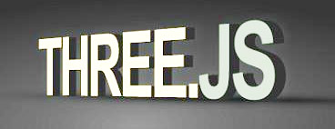

|  | ||
OpenGL for HTML5 Canvas |
Harness WebGL Complexity |
|
HTML5:Brian Sletten June 18, 2012 |
HTML5:Chandler Prall /
Physijs Jan. 21, 2013 |
|
| http://www.khronos.org | http://threejs.org | |
Fluidic API for Three.js |
Math Visualization |
|
| created by Jerome Etienne | created by Steven Wittens | |
| http://jeromeetienne.github.io/tquery | https://github.com/unconed/MathBox.js |
MathBox sets up its scene within a Three.js scene
DomReady.ready( function() {
ThreeBox.preload( ['MathBox.glsl.html'], initMathBox ); } );
Due to single domain issues MathBox.glsl.html has to be in or below directory
In Chrome run with google-chrome --allow-file-access-from-files
initMathBox = function() {
var mathbox = window.mathbox = mathBox( {
controlClass:ThreeBox.OrbitControls, cameraControls:true,
cursor:true, elementResize:true, fullscreen:true,
screenshot:true, stats:false, scale:1
} ).start();
mathbox
.viewport( { type:'cartesian', range:[[0,1],[0,1],[0,1]],
scale:[.7,.7,.7], polar:0 } )
mathbox
.camera( { orbit:4, phi:τ/4-.5, theta:.7 } )
mathbox
.grid( { axis:[0,1], color:0xa0a0a0, offset:[0,0,0], ticks:[10,10] } )
.grid( { axis:[1,2], color:0xa0a0a0, offset:[0,0,0], ticks:[10,10] } )
.grid( { axis:[0,2], color:0xa0a0a0, offset:[0,0,0], ticks:[10,10] } )
mathbox
.surface( { shaded:true, domain:[ [0,1], [0,1] ], n:[32,32],
expression:surfaceWaves, opacity:.999 } )
.surface( { shaded:false, domain:[ [0,1], [0,1] ], n:[ 2, 2],
expression:surfaceSlice, opacity:.5, color:0x20C050 } );
// Wavey sin cos surface
function surfaceWaves(x, y) {
return [x, 0.25 * ( Math.cos(x*10) + Math.cos(y*10) + 2 ), y]; }
// Horizontal slice
function surfaceSlice(x, y) {
var t = clock(1);
return 0.5 * ( Math.sin(t) + 1 ); }
// Clock animation that starts when called by surfaceSlice().
var clocks = {};
window.clock = function (id) {
if (!clocks[id]) clocks[id] = +new Date();
return (+new Date() - clocks[id]) * .001;
};
mathbox
.viewport( { type:'cartesian', range:[[0,1], [0,1], [0,1]],
scale:[.7,.7,.7], polar:0 } )
.camera( { orbit:4, phi:τ/4-.5, theta:.7 } )
.grid( { axis:[0,1], color:0xa0a0a0, offset:[0,0,0], ticks:[10,10] } )
.grid( { axis:[1,2], color:0xa0a0a0, offset:[0,0,0], ticks:[10,10] } )
.grid( { axis:[0,2], color:0xa0a0a0, offset:[0,0,0], ticks:[10,10] } )
.surface( { shaded:true, domain:[[0,1],[0,1]], n:[32,32],
expression:surfaceWaves, opacity:.999 } )
.surface( { shaded:false, domain:[[0,1],[0,1]], n:[ 2, 2],
expression:surfaceSlice, opacity:.5, color:0x20C050 } );